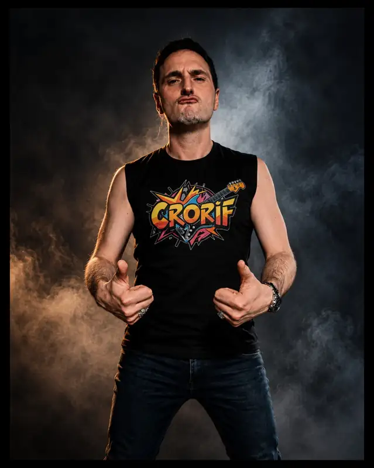

💀 Bienvenue dans l’univers complètement barré de CRORIF : du riff, de l’autodérision, des solos, du WTF et surtout une sacrée dose de bordel sur scène.
CRORIF, c’est un projet solo rock WTF et festif qui mélange gros riffs, voix déjantées, second degré et interaction permanente avec le public.
Dans cette interview, CRORIF raconte la naissance du projet, l’origine du nom, ses influences entre Stupeflip et Ultra Vomit, sa manière d’aborder la scène et ses projets à venir.